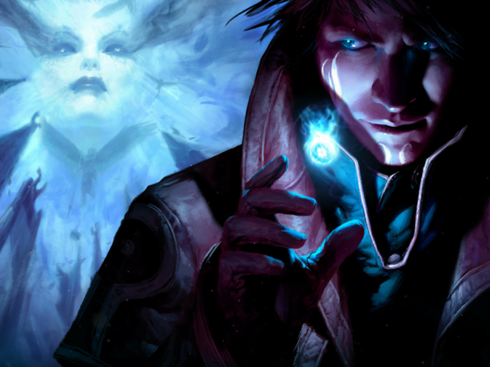

Classes
As classes a seguir foram feitas ou refeitas por eu mesmo, para tornar o jogo mais interessante. Algumas delas podem sofrer mudanças após melhor análise sobre suas features e combos, dentre elas temos:
Duelista

Bruxo
Necromancer

As classes a seguir foram feitas ou refeitas por eu mesmo, para tornar o jogo mais interessante. Algumas delas podem sofrer mudanças após melhor análise sobre suas features e combos, dentre elas temos: